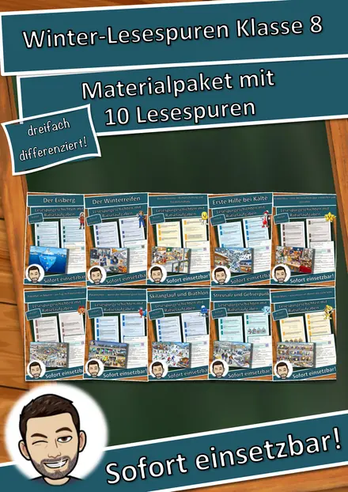
Materialpaket Winter und Advent für die 8. Klasse: 10 Lesespurgeschichten mit Rätselaufgaben fächerübergreifend (Polarlichter, Streusalz, Krippenbau & mehr)
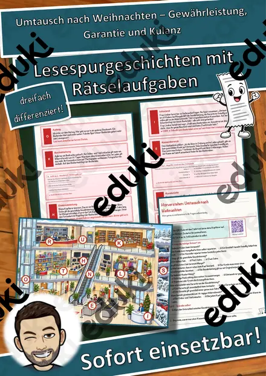
Umtausch nach Weihnachten – Gewährleistung, Garantie und Kulanz – Lesespurgeschichte mit Rätselaufgaben (Klasse 8)
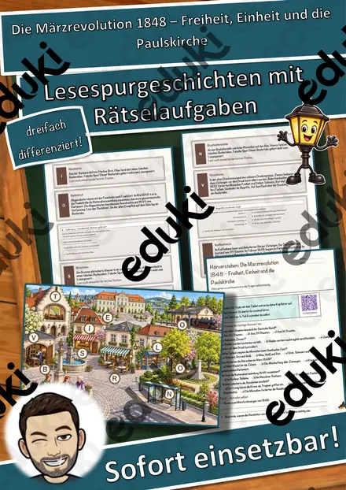
Die Märzrevolution 1848 – Freiheit, Einheit und die Paulskirche – Lesespurgeschichte mit Rätselaufgaben (Klasse 8)
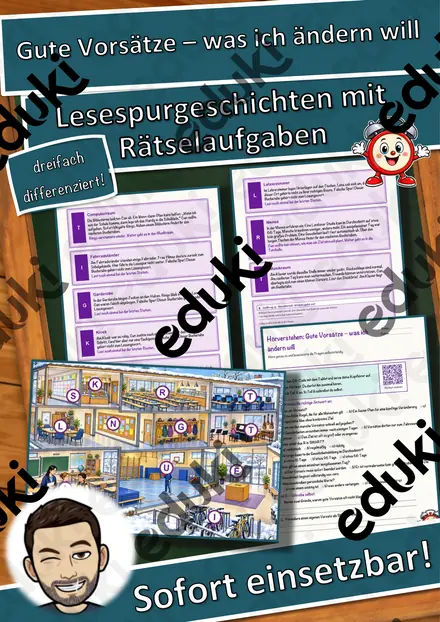
Gute Vorsätze – was ich ändern will – Lesespurgeschichte mit Rätselaufgaben (Klasse 8)
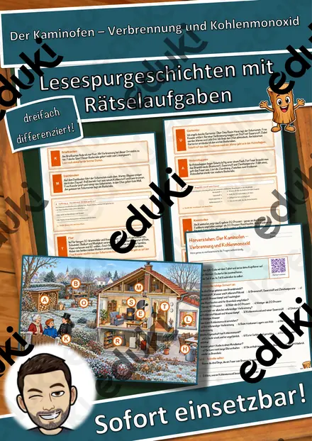
Der Kaminofen – Verbrennung und Kohlenmonoxid – Lesespurgeschichte mit Rätselaufgaben (Klasse 8)
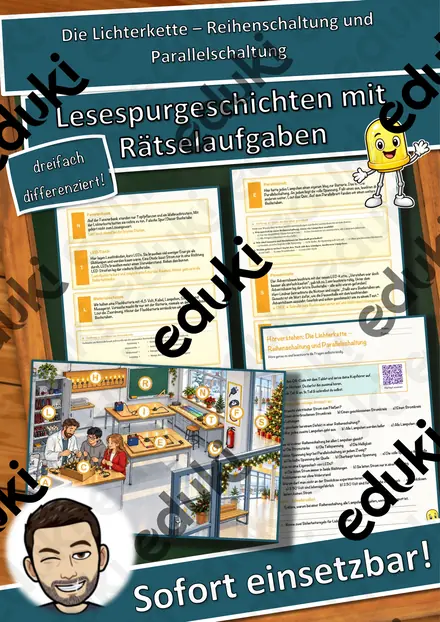
Die Lichterkette – Reihenschaltung und Parallelschaltung – Lesespurgeschichte mit Rätselaufgaben (Klasse 8)

Ostereier natürlich färben – Farbstoffe und Indikatoren – Lesespurgeschichte mit Rätselaufgaben (Klasse 8)
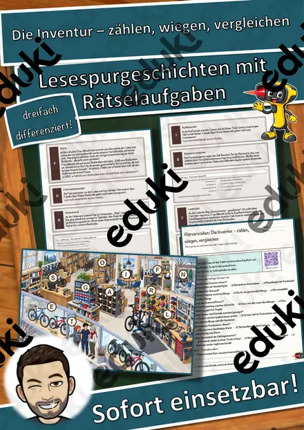
Die Inventur – zählen, wiegen, vergleichen – Lesespurgeschichte mit Rätselaufgaben (Klasse 8)

Handwärmer – wie Wärme aus der Tasche entsteht – Lesespurgeschichte mit Rätselaufgaben (Klasse 8)
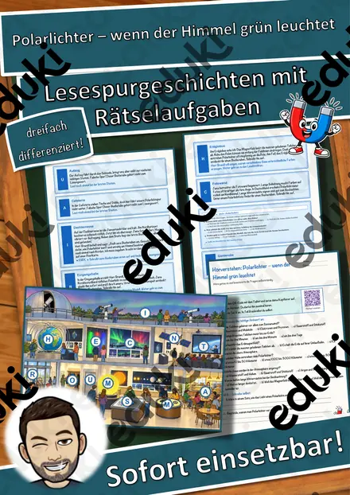
Polarlichter – wenn der Himmel grün leuchtet – Lesespurgeschichte mit Rätselaufgaben (Klasse 8)
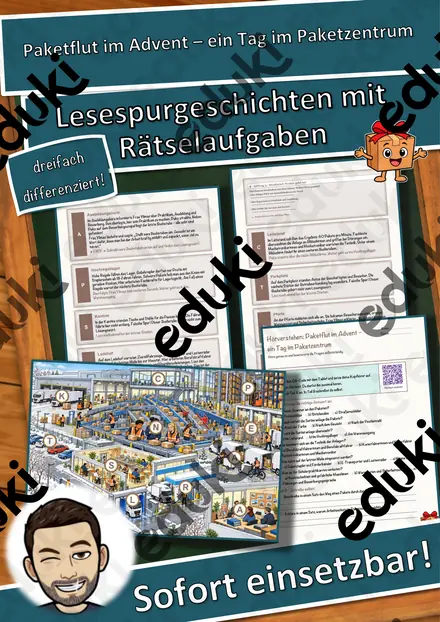
Paketflut im Advent – ein Tag im Paketzentrum – Lesespurgeschichte mit Rätselaufgaben (Klasse 8)
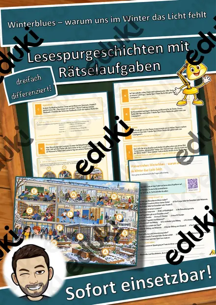
Winterblues – warum uns im Winter das Licht fehlt – Lesespurgeschichte mit Rätselaufgaben (Klasse 8)
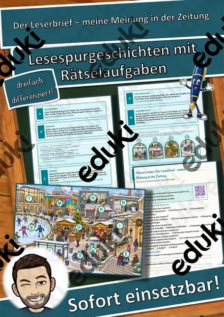
Der Leserbrief – meine Meinung in der Zeitung – Lesespurgeschichte mit Rätselaufgaben (Klasse 8)

Streusalz und Gefrierpunkt – warum Salz Eis schmelzen lässt – Lesespurgeschichte mit Rätselaufgaben (Klasse 8)
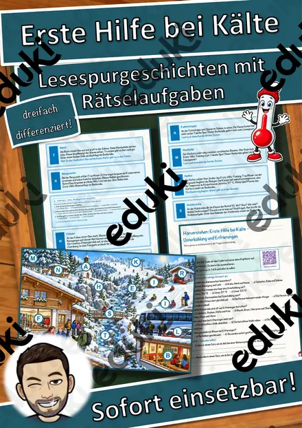
Erste Hilfe bei Kälte – Unterkühlung und Erfrierungen – Lesespurgeschichte mit Rätselaufgaben (Klasse 8)
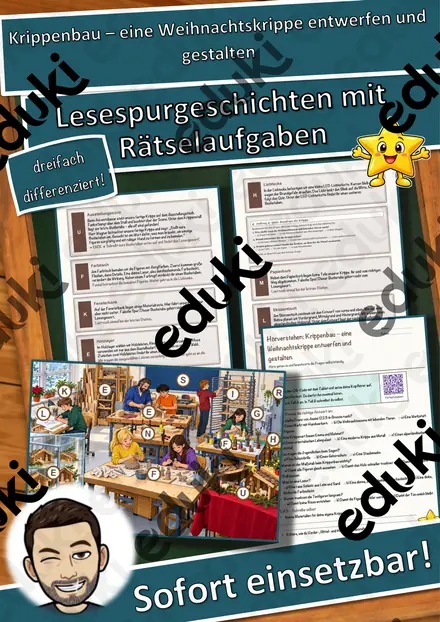
Krippenbau – eine Weihnachtskrippe entwerfen und gestalten – Lesespurgeschichte mit Rätselaufgaben (Klasse 8)
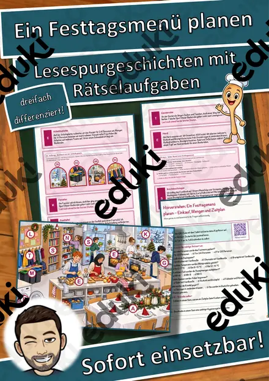
Ein Festtagsmenü planen – Einkauf, Mengen und Zeitplan – Lesespurgeschichte mit Rätselaufgaben (Klasse 8)
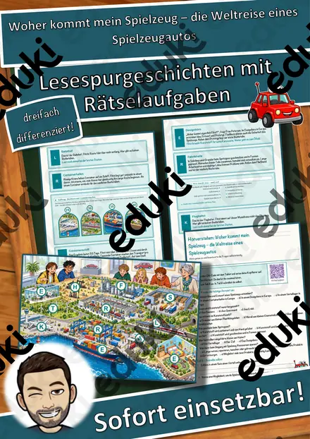
Woher kommt mein Spielzeug – die Weltreise eines Spielzeugautos – Lesespurgeschichte mit Rätselaufgaben (Klasse 8)

Flammenfärbung – Metallsalze in der Brennerflamme nachweisen – Lesespurgeschichte mit Rätselaufgaben (Klasse 8)
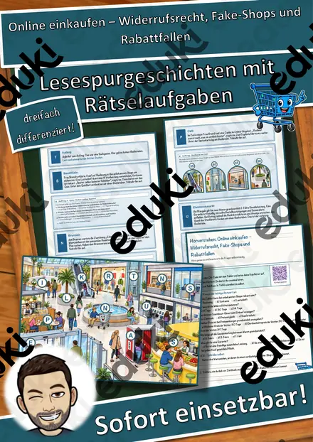
Online einkaufen – Widerrufsrecht, Fake-Shops und Rabattfallen – Lesespurgeschichte mit Rätselaufgaben (Klasse 8)
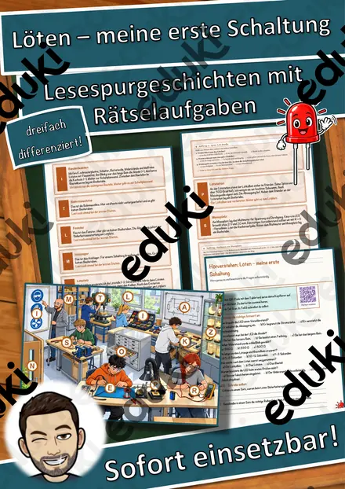
Löten – meine erste Schaltung – Lesespurgeschichte mit Rätselaufgaben (Klasse 8)
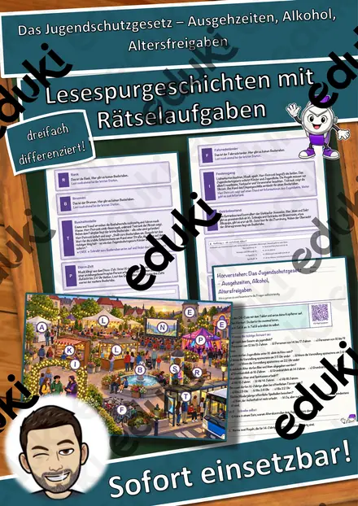
Das Jugendschutzgesetz – Ausgehzeiten, Alkohol, Altersfreigaben – Lesespurgeschichte mit Rätselaufgaben (Klasse 8)

Elektroschrott – was in alten Handys steckt – Lesespurgeschichte mit Rätselaufgaben (Klasse 8)
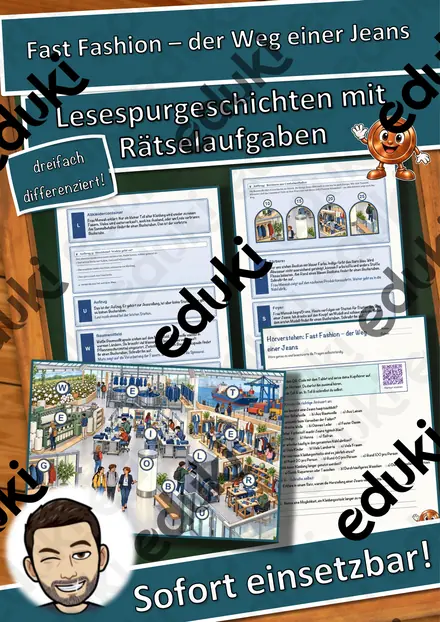
Fast Fashion – der Weg einer Jeans – Lesespurgeschichte mit Rätselaufgaben (Klasse 8)
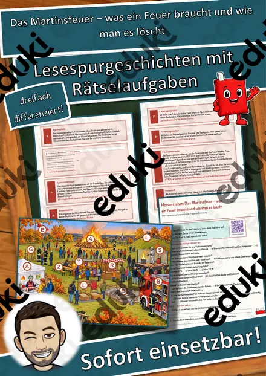
Das Martinsfeuer – was ein Feuer braucht und wie man es löscht – Lesespurgeschichte mit Rätselaufgaben (Klasse 8)
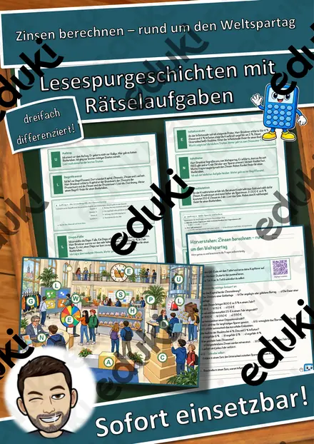
Zinsen berechnen – rund um den Weltspartag – Lesespurgeschichte mit Rätselaufgaben (Klasse 8)
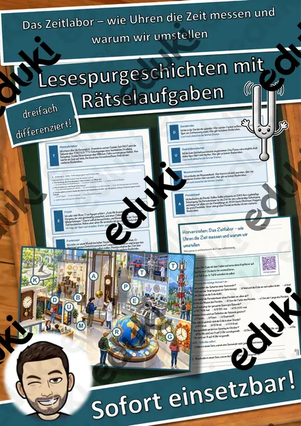
Das Zeitlabor – wie Uhren die Zeit messen und warum wir umstellen – Lesespurgeschichte mit Rätselaufgaben (Klasse 8)
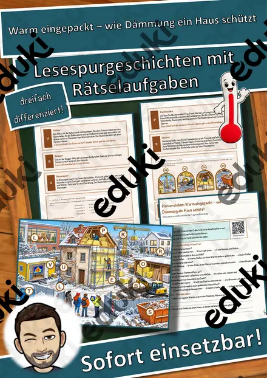
Warm eingepackt – wie Dämmung ein Haus schützt – Lesespurgeschichte mit Rätselaufgaben (Klasse 8)
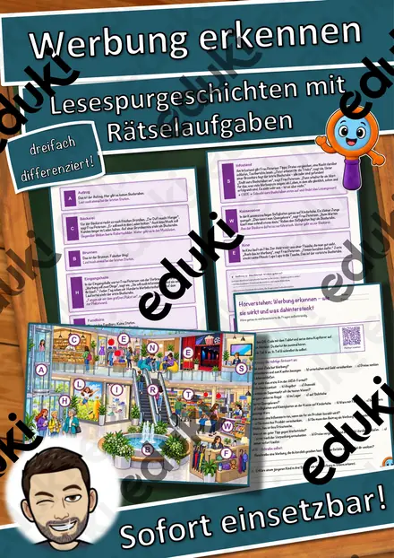
Werbung erkennen – wie sie wirkt und was dahintersteckt – Lesespurgeschichte mit Rätselaufgaben (Klasse 8)
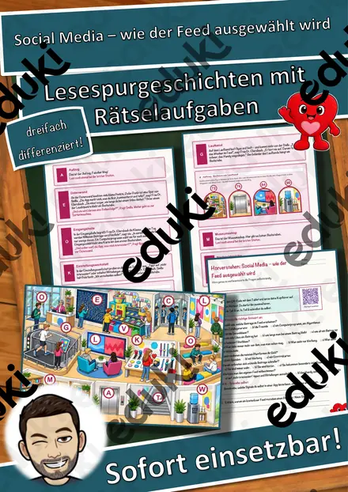
Social Media – wie der Feed ausgewählt wird – Lesespurgeschichte mit Rätselaufgaben (Klasse 8)
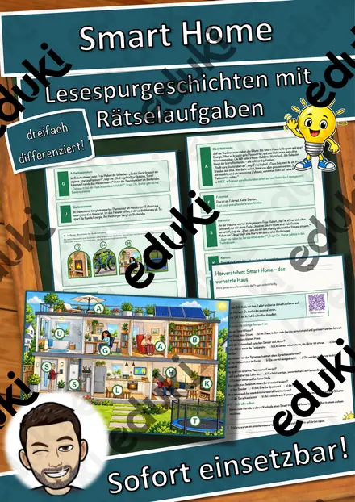
Smart Home – das vernetzte Haus – Lesespurgeschichte mit Rätselaufgaben (Klasse 8)
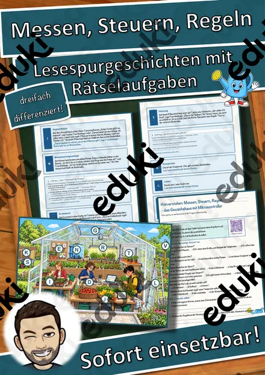
Messen, Steuern, Regeln – das Gewächshaus mit Mikrocontroller – Lesespurgeschichte mit Rätselaufgaben (Klasse 8)
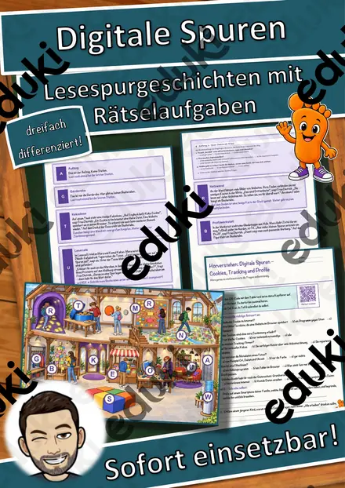
Digitale Spuren – Cookies, Tracking und Profile – Lesespurgeschichte mit Rätselaufgaben (Klasse 8)
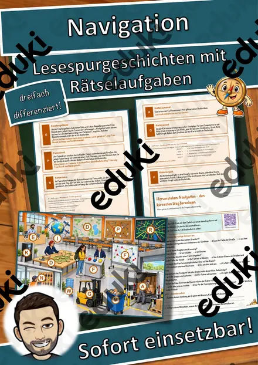
Navigation – den kürzesten Weg berechnen – Lesespurgeschichte mit Rätselaufgaben (Klasse 8)
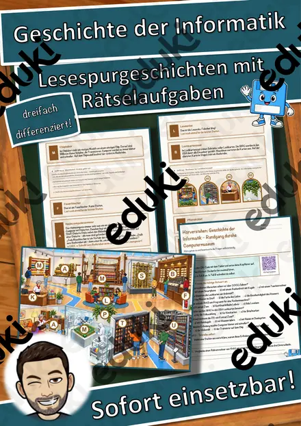
Geschichte der Informatik – Rundgang durchs Computermuseum – Lesespurgeschichte mit Rätselaufgaben (Klasse 8)
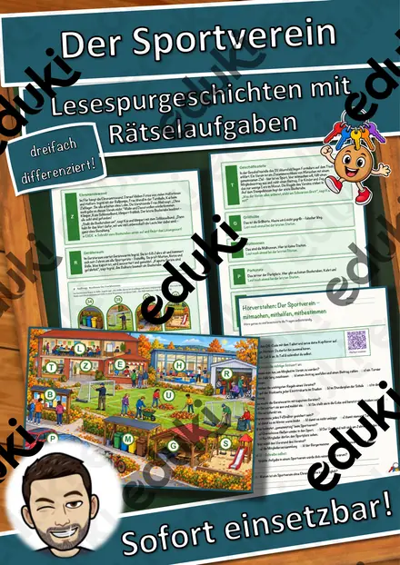
Der Sportverein – mitmachen, mithelfen, mitbestimmen – Lesespurgeschichte mit Rätselaufgaben (Klasse 8)
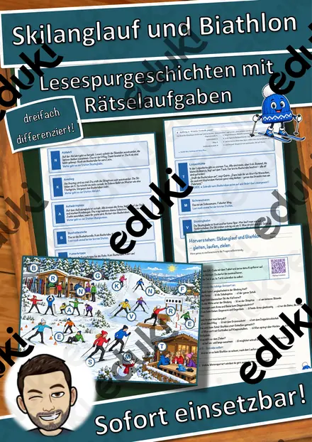
Skilanglauf und Biathlon – gleiten, laufen, zielen – Lesespurgeschichte mit Rätselaufgaben (Klasse 8)
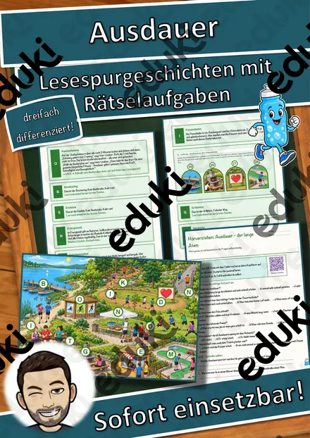
Ausdauer – der lange Atem – Lesespurgeschichte mit Rätselaufgaben (Klasse 8)
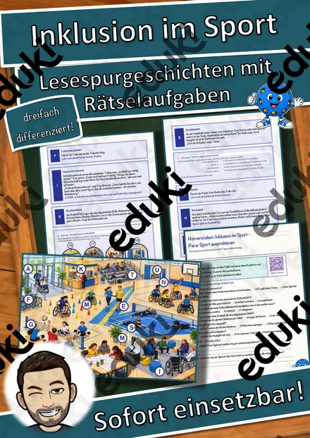
Inklusion im Sport – Para-Sport ausprobieren – Lesespurgeschichte mit Rätselaufgaben (Klasse 8)
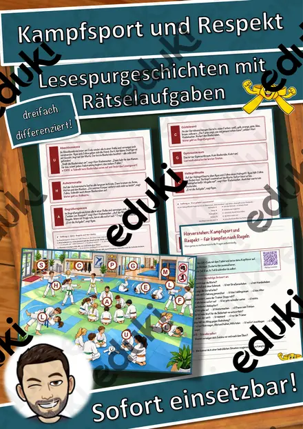
Kampfsport und Respekt – fair kämpfen nach Regeln – Lesespurgeschichte mit Rätselaufgaben (Klasse 8)
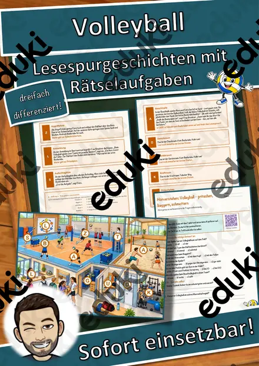
Volleyball – pritschen, baggern, schmettern – Lesespurgeschichte mit Rätselaufgaben (Klasse 8)
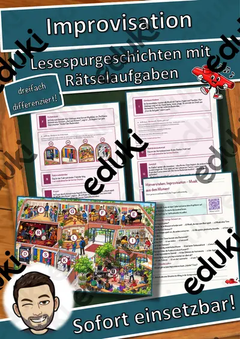
Improvisation – Musik aus dem Moment – Lesespurgeschichte mit Rätselaufgaben (Klasse 8)
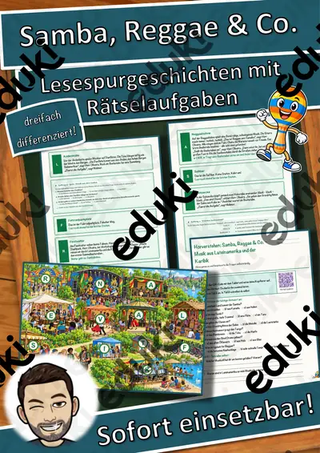
Samba, Reggae & Co. – Musik aus Lateinamerika und der Karibik – Lesespurgeschichte mit Rätselaufgaben (Klasse 8)
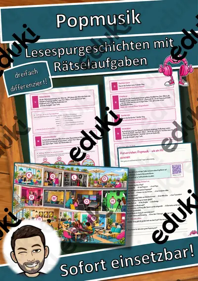
Popmusik – wie ein Hit entsteht – Lesespurgeschichte mit Rätselaufgaben (Klasse 8)
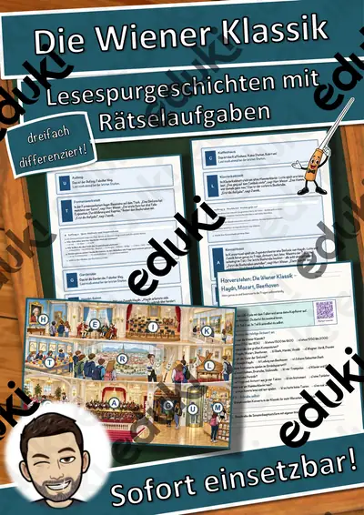
Die Wiener Klassik – Haydn, Mozart, Beethoven – Lesespurgeschichte mit Rätselaufgaben (Klasse 8)
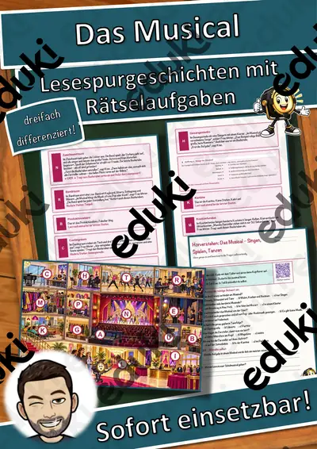
Das Musical – Singen, Spielen, Tanzen – Lesespurgeschichte mit Rätselaufgaben (Klasse 8)
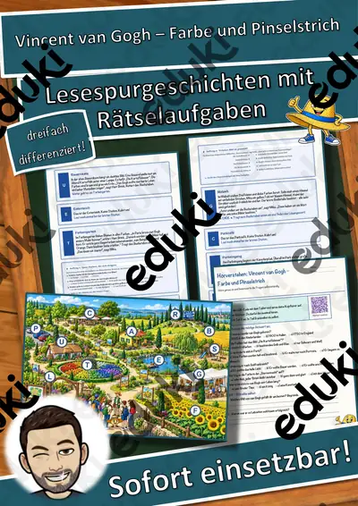
Vincent van Gogh – Farbe und Pinselstrich – Lesespurgeschichte mit Rätselaufgaben (Klasse 8)
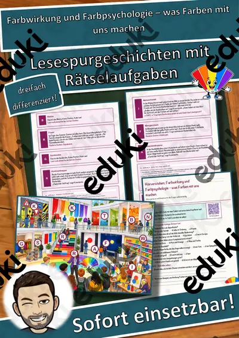
Farbwirkung und Farbpsychologie – was Farben mit uns machen – Lesespurgeschichte mit Rätselaufgaben (Klasse 8)
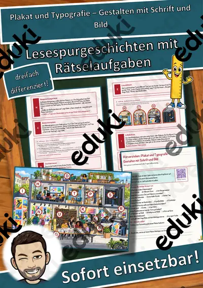
Plakat und Typografie – Gestalten mit Schrift und Bild – Lesespurgeschichte mit Rätselaufgaben (Klasse 8)
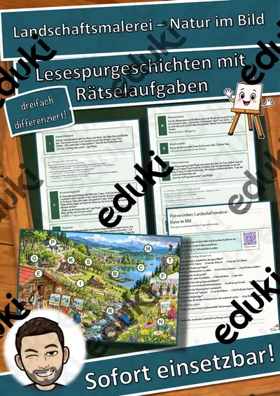
Landschaftsmalerei – Natur im Bild – Lesespurgeschichte mit Rätselaufgaben (Klasse 8)
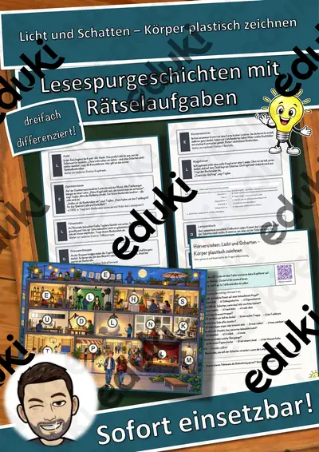
Licht und Schatten – Körper plastisch zeichnen – Lesespurgeschichte mit Rätselaufgaben (Klasse 8)
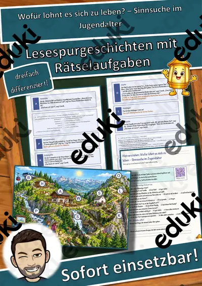
Wofür lohnt es sich zu leben? – Sinnsuche im Jugendalter – Lesespurgeschichte mit Rätselaufgaben (Klasse 8)
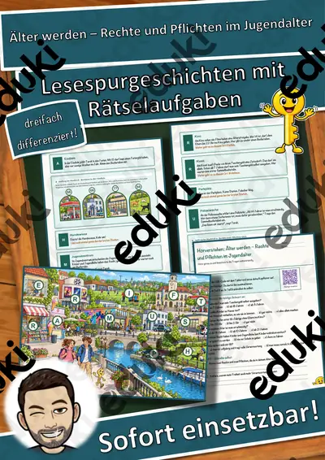
Älter werden – Rechte und Pflichten im Jugendalter – Lesespurgeschichte mit Rätselaufgaben (Klasse 8)
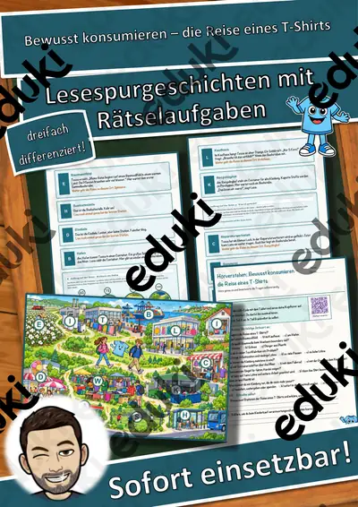
Bewusst konsumieren – die Reise eines T-Shirts – Lesespurgeschichte mit Rätselaufgaben (Klasse 8)
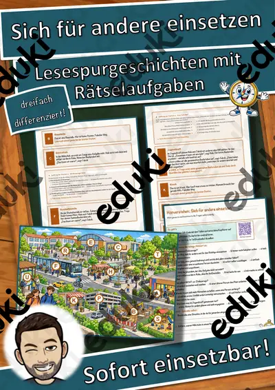
Sich für andere einsetzen – Lesespurgeschichte mit Rätselaufgaben (Klasse 8)
Verantwortung in der digitalen Welt – Lesespurgeschichte mit Rätselaufgaben (Klasse 8)
Der Schulserver – Lesespurgeschichte mit Rätselaufgaben (Klasse 8)
Der Satellit – Lesespurgeschichte mit Rätselaufgaben (Klasse 8)
Das Echolot – Lesespurgeschichte mit Rätselaufgaben (Klasse 8)
Das Tiefdruckgebiet – Lesespurgeschichte mit Rätselaufgaben (Klasse 8)
Der Winterreifen – Lesespurgeschichte mit Rätselaufgaben (Klasse 8)
Das Rathaus – Lesespurgeschichte mit Rätselaufgaben (Klasse 8)
Der Nebel – Lesespurgeschichte mit Rätselaufgaben (Klasse 8)

Die Gärung – Lesespurgeschichte mit Rätselaufgaben (Klasse 8)
Die Kieme – Lesespurgeschichte mit Rätselaufgaben (Klasse 8)

Das Salz – Lesespurgeschichte mit Rätselaufgaben (Klasse 8)

Das Atom – Lesespurgeschichte mit Rätselaufgaben (Klasse 8)
Der Muskel – Lesespurgeschichte mit Rätselaufgaben (Klasse 8)
Das Streichholz – Lesespurgeschichte mit Rätselaufgaben (Klasse 8)
Die Thermoskanne – Lesespurgeschichte mit Rätselaufgaben (Klasse 8)
Das Vogelei – Lesespurgeschichte mit Rätselaufgaben (Klasse 8)
Der Canyon – Lesespurgeschichte mit Rätselaufgaben (Klasse 8)
Der Kran – Lesespurgeschichte mit Rätselaufgaben (Klasse 8)
Die Sanddüne – Lesespurgeschichte mit Rätselaufgaben (Klasse 8)
Die Taiga – Lesespurgeschichte mit Rätselaufgaben (Klasse 8)
Die Hecke – Lesespurgeschichte mit Rätselaufgaben (Klasse 8)
Die Erde – Lesespurgeschichte mit Rätselaufgaben (Klasse 8)
Die Mangrove – Lesespurgeschichte mit Rätselaufgaben (Klasse 8)
Die Tundra – Lesespurgeschichte mit Rätselaufgaben (Klasse 8)
Das Hochgebirge – Lesespurgeschichte mit Rätselaufgaben (Klasse 8)
Die Savanne – Lesespurgeschichte mit Rätselaufgaben (Klasse 8)
Der Bergsee – Lesespurgeschichte mit Rätselaufgaben (Klasse 8)
Der Fliegenpilz – Lesespurgeschichte mit Rätselaufgaben (Klasse 8)
Der Dachs – Lesespurgeschichte mit Rätselaufgaben (Klasse 8)
Der Kranich – Lesespurgeschichte mit Rätselaufgaben (Klasse 8)
Das Reh – Lesespurgeschichte mit Rätselaufgaben (Klasse 8)
Die Amsel – Lesespurgeschichte mit Rätselaufgaben (Klasse 8)
Der Apfelbaum – Lesespurgeschichte mit Rätselaufgaben (Klasse 8)
Die Ameise – Lesespurgeschichte mit Rätselaufgaben (Klasse 8)
Die Eiche – Lesespurgeschichte mit Rätselaufgaben (Klasse 8)
Der Biber – Lesespurgeschichte mit Rätselaufgaben (Klasse 8)
Der Adler – Lesespurgeschichte mit Rätselaufgaben (Klasse 8)
Die Schildkröte – Lesespurgeschichte mit Rätselaufgaben (Klasse 8)
Der Hummer – Lesespurgeschichte mit Rätselaufgaben (Klasse 8)
Der Tintenfisch – Lesespurgeschichte mit Rätselaufgaben (Klasse 8)
Der Mais – Lesespurgeschichte mit Rätselaufgaben (Klasse 8)
Der Weizen – Lesespurgeschichte mit Rätselaufgaben (Klasse 8)
Der Bär – Lesespurgeschichte mit Rätselaufgaben (Klasse 8)
Die Erdkröte – Lesespurgeschichte mit Rätselaufgaben (Klasse 8)
Der Hirschkäfer – Lesespurgeschichte mit Rätselaufgaben (Klasse 8)
Das Wildschwein – Lesespurgeschichte mit Rätselaufgaben (Klasse 8)
Der Wolf – Lesespurgeschichte mit Rätselaufgaben (Klasse 8)
Der Hamster – Lesespurgeschichte mit Rätselaufgaben (Klasse 8)
Die Heuschrecke – Lesespurgeschichte mit Rätselaufgaben (Klasse 8)
Der Luchs – Lesespurgeschichte mit Rätselaufgaben (Klasse 8)
Der Lachs – Lesespurgeschichte mit Rätselaufgaben (Klasse 8)
Der Delfin – Lesespurgeschichte mit Rätselaufgaben (Klasse 8)
Der Hase – Lesespurgeschichte mit Rätselaufgaben (Klasse 8)
Die Sonnenblume – Lesespurgeschichte mit Rätselaufgaben (Klasse 8)
Der Feuersalamander – Lesespurgeschichte mit Rätselaufgaben (Klasse 8)
Der Hirsch – Lesespurgeschichte mit Rätselaufgaben (Klasse 8)
Der Fuchs – Lesespurgeschichte mit Rätselaufgaben (Klasse 8)
Der Kaktus – Lesespurgeschichte mit Rätselaufgaben (Klasse 8)
Der Storch – Lesespurgeschichte mit Rätselaufgaben (Klasse 8)
Das Chamäleon – Lesespurgeschichte mit Rätselaufgaben (Klasse 8)
Das Krokodil – Lesespurgeschichte mit Rätselaufgaben (Klasse 8)
Der Pinguin – Lesespurgeschichte mit Rätselaufgaben (Klasse 8)
Der Hai – Lesespurgeschichte mit Rätselaufgaben (Klasse 8)
Der Löwenzahn – Lesespurgeschichte mit Rätselaufgaben (Klasse 8)
Die Eule – Lesespurgeschichte mit Rätselaufgaben (Klasse 8)
Die Libelle – Lesespurgeschichte mit Rätselaufgaben (Klasse 8)
Die Muschel – Lesespurgeschichte mit Rätselaufgaben (Klasse 8)
Die Tierzelle – Lesespurgeschichte mit Rätselaufgaben (Klasse 8)
Der Haartrockner – Lesespurgeschichte mit Rätselaufgaben (Klasse 8)
Der Baukran – Lesespurgeschichte mit Rätselaufgaben (Klasse 8)
Die Fahrradpumpe – Lesespurgeschichte mit Rätselaufgaben (Klasse 8)
Der Wasserkocher – Lesespurgeschichte mit Rätselaufgaben (Klasse 8)
Die Sanduhr – Lesespurgeschichte mit Rätselaufgaben (Klasse 8)
Der Eisberg – Lesespurgeschichte mit Rätselaufgaben (Klasse 8)
Der Dickdarm – Lesespurgeschichte mit Rätselaufgaben (Klasse 8)
Die Taschenlampe – Lesespurgeschichte mit Rätselaufgaben (Klasse 8)
Die Blockflöte – Lesespurgeschichte mit Rätselaufgaben (Klasse 8)
Die Tulpe – Lesespurgeschichte mit Rätselaufgaben (Klasse 8)
Der Kompass – Lesespurgeschichte mit Rätselaufgaben (Klasse 8)
Der Regenwurm – Lesespurgeschichte mit Rätselaufgaben (Klasse 8)
Das Thermometer – Lesespurgeschichte mit Rätselaufgaben (Klasse 8)
Das Feuerzeug – Lesespurgeschichte mit Rätselaufgaben (Klasse 8)
Der Dünndarm – Lesespurgeschichte mit Rätselaufgaben (Klasse 8)
Die Höhle – Lesespurgeschichte mit Rätselaufgaben (Klasse 8)
Die Glühlampe – Lesespurgeschichte mit Rätselaufgaben (Klasse 8)
Die Balkenwaage – Lesespurgeschichte mit Rätselaufgaben (Klasse 8)
Der Toaster – Lesespurgeschichte mit Rätselaufgaben (Klasse 8)
Der Rauchmelder – Lesespurgeschichte mit Rätselaufgaben (Klasse 8)
Der Kehlkopf – Lesespurgeschichte mit Rätselaufgaben (Klasse 8)
Der Schnellkochtopf – Lesespurgeschichte mit Rätselaufgaben (Klasse 8)
Der Brunnen – Lesespurgeschichte mit Rätselaufgaben (Klasse 8)
Der Meeresboden – Lesespurgeschichte mit Rätselaufgaben (Klasse 8)
Der Zahn – Lesespurgeschichte mit Rätselaufgaben (Klasse 8)
Die Nähmaschine – Lesespurgeschichte mit Rätselaufgaben (Klasse 8)
Das Moor – Lesespurgeschichte mit Rätselaufgaben (Klasse 8)
Das Schiffshebewerk – Lesespurgeschichte mit Rätselaufgaben (Klasse 8)
Die Oase – Lesespurgeschichte mit Rätselaufgaben (Klasse 8)
Der Knochen – Lesespurgeschichte mit Rätselaufgaben (Klasse 8)
Die Bogenbrücke – Lesespurgeschichte mit Rätselaufgaben (Klasse 8)
Die Zentralheizung – Lesespurgeschichte mit Rätselaufgaben (Klasse 8)
Der Braunkohletagebau – Lesespurgeschichte mit Rätselaufgaben (Klasse 8)
Der Komposthaufen – Lesespurgeschichte mit Rätselaufgaben (Klasse 8)
Die Lawine – Lesespurgeschichte mit Rätselaufgaben (Klasse 8)
Die Filtration – Lesespurgeschichte mit Rätselaufgaben (Klasse 8)
Die Klappbrücke – Lesespurgeschichte mit Rätselaufgaben (Klasse 8)
Der Backofen – Lesespurgeschichte mit Rätselaufgaben (Klasse 8)
Die Windkraftanlage – Lesespurgeschichte mit Rätselaufgaben (Klasse 8)
Der Mäander – Lesespurgeschichte mit Rätselaufgaben (Klasse 8)
Der Tsunami – Lesespurgeschichte mit Rätselaufgaben (Klasse 8)
Das Luftschiff – Lesespurgeschichte mit Rätselaufgaben (Klasse 8)
Der Wasserturm – Lesespurgeschichte mit Rätselaufgaben (Klasse 8)
Das Containerschiff – Lesespurgeschichte mit Rätselaufgaben (Klasse 8)
Die Hängebrücke – Lesespurgeschichte mit Rätselaufgaben (Klasse 8)
Die Tropfsteinhöhle – Lesespurgeschichte mit Rätselaufgaben (Klasse 8)
Der Gasbrenner – Lesespurgeschichte mit Rätselaufgaben (Klasse 8)
Die Pflanzenzelle – Lesespurgeschichte mit Rätselaufgaben (Klasse 8)
Die Papierfabrik – Lesespurgeschichte mit Rätselaufgaben (Klasse 8)
Die Atmosphäre – Lesespurgeschichte mit Rätselaufgaben (Klasse 8)
Das Bodenprofil – Lesespurgeschichte mit Rätselaufgaben (Klasse 8)
Die Kläranlage – Lesespurgeschichte mit Rätselaufgaben (Klasse 8)
Die Bakterienzelle – Lesespurgeschichte mit Rätselaufgaben (Klasse 8)
Die Bestäubung – Lesespurgeschichte mit Rätselaufgaben (Klasse 9)
Die Lunge – Lesespurgeschichte mit Rätselaufgaben (Klasse 8)
Die Kerze – Lesespurgeschichte mit Rätselaufgaben (Klasse 8)
Die Rolltreppe – Lesespurgeschichte mit Rätselaufgaben (Klasse 8)
Der Fjord – Lesespurgeschichte mit Rätselaufgaben (Klasse 8)
Der Fahrraddynamo – Lesespurgeschichte mit Rätselaufgaben (Klasse 8)
Die Konservenfabrik – Lesespurgeschichte mit Rätselaufgaben (Klasse 8)
Das Hochmoor – Lesespurgeschichte mit Rätselaufgaben (Klasse 8)
Die Färberei – Lesespurgeschichte mit Rätselaufgaben (Klasse 8)
Der Kühlschrank – Lesespurgeschichte mit Rätselaufgaben (Klasse 8)
Die Schlucht – Lesespurgeschichte mit Rätselaufgaben (Klasse 8)
Der Tunnel – Lesespurgeschichte mit Rätselaufgaben (Klasse 8)
Die Chromatographie – Lesespurgeschichte mit Rätselaufgaben (Klasse 8)
Der Staubsauger – Lesespurgeschichte mit Rätselaufgaben (Klasse 8)
Der Schädel – Lesespurgeschichte mit Rätselaufgaben (Klasse 8)
Der Steinbruch – Lesespurgeschichte mit Rätselaufgaben (Klasse 8)
Der Elektromotor – Lesespurgeschichte mit Rätselaufgaben (Klasse 8)
Das Pumpspeicherkraftwerk – Lesespurgeschichte mit Rätselaufgaben (Klasse 8)
Das Wasserwerk – Lesespurgeschichte mit Rätselaufgaben (Klasse 8)
Das Gewächshaus – Lesespurgeschichte mit Rätselaufgaben (Klasse 8)
Das Teleskop – Lesespurgeschichte mit Rätselaufgaben (Klasse 8)
Der Plattenspieler – Lesespurgeschichte mit Rätselaufgaben (Klasse 8)
Der Konzertsaal – Lesespurgeschichte mit Rätselaufgaben (Klasse 8)
Die Destillation – Lesespurgeschichte mit Rätselaufgaben (Klasse 8)
Die Fotosynthese – Lesespurgeschichte mit Rätselaufgaben (Klasse 8)
Der Magen – Lesespurgeschichte mit Rätselaufgaben (Klasse 8)
Die Wurzel – Lesespurgeschichte mit Rätselaufgaben (Klasse 8)
Der Dudelsack – Lesespurgeschichte mit Rätselaufgaben (Klasse 8)
Das Cajón – Lesespurgeschichte mit Rätselaufgaben (Klasse 8)
Das Delta – Lesespurgeschichte mit Rätselaufgaben (Klasse 8)
Die Bauchspeicheldrüse – Lesespurgeschichte mit Rätselaufgaben (Klasse 8)
Der Baumstamm – Lesespurgeschichte mit Rätselaufgaben (Klasse 8)
Das Vibraphon – Lesespurgeschichte mit Rätselaufgaben (Klasse 8)
Das Xylophon – Lesespurgeschichte mit Rätselaufgaben (Klasse 8)
Die Zunge – Lesespurgeschichte mit Rätselaufgaben (Klasse 8)
Die Nase – Lesespurgeschichte mit Rätselaufgaben (Klasse 8)
Der Bunsenbrenner – Lesespurgeschichte mit Rätselaufgaben (Klasse 8)
Die Posaune – Lesespurgeschichte mit Rätselaufgaben (Klasse 8)
Die Entsalzungsanlage – Lesespurgeschichte mit Rätselaufgaben (Klasse 8)
Der Fotoapparat – Lesespurgeschichte mit Rätselaufgaben (Klasse 8)
Das Akkordeon – Lesespurgeschichte mit Rätselaufgaben (Klasse 8)
Die Harfe – Lesespurgeschichte mit Rätselaufgaben (Klasse 8)
Die Wirbelsäule – Lesespurgeschichte mit Rätselaufgaben (Klasse 8)
Das Kniegelenk – Lesespurgeschichte mit Rätselaufgaben (Klasse 8)
Das Herz – Lesespurgeschichte mit Rätselaufgaben (Klasse 8)
Die Waschmaschine – Lesespurgeschichte mit Rätselaufgaben (Klasse 8)
Der Fallschirm – Lesespurgeschichte mit Rätselaufgaben (Klasse 8)
Die Ölmühle – Lesespurgeschichte mit Rätselaufgaben (Klasse 8)
Die Achterbahn – Lesespurgeschichte mit Rätselaufgaben (Klasse 8)
Der Wasserfall – Lesespurgeschichte mit Rätselaufgaben (Klasse 8)
Die Kaffeerösterei – Lesespurgeschichte mit Rätselaufgaben (Klasse 8)
Der Hubschrauber – Lesespurgeschichte mit Rätselaufgaben (Klasse 8)
Die Schokoladenfabrik – Lesespurgeschichte mit Rätselaufgaben (Klasse 8)
Das Segelschiff – Lesespurgeschichte mit Rätselaufgaben (Klasse 8)
Der Bagger – Lesespurgeschichte mit Rätselaufgaben (Klasse 8)
Der Aufzug – Lesespurgeschichte mit Rätselaufgaben (Klasse 8)
Der Feuerlöscher – Lesespurgeschichte mit Rätselaufgaben (Klasse 8)
Der Mähdrescher – Lesespurgeschichte mit Rätselaufgaben (Klasse 8)
Die Windmühle – Lesespurgeschichte mit Rätselaufgaben (Klasse 8)
Das Flugzeug – Lesespurgeschichte mit Rätselaufgaben (Klasse 8)
Die Geige – Lesespurgeschichte mit Rätselaufgaben (Klasse 8)
Die Dampflokomotive – Lesespurgeschichte mit Rätselaufgaben (Klasse 8)
Die Pauke – Lesespurgeschichte mit Rätselaufgaben (Klasse 8)
Die Trompete – Lesespurgeschichte mit Rätselaufgaben (Klasse 8)
Die Wanderdüne – Lesespurgeschichte mit Rätselaufgaben (Klasse 8)
Die Steilküste – Lesespurgeschichte mit Rätselaufgaben (Klasse 8)
Das U-Boot – Lesespurgeschichte mit Rätselaufgaben (Klasse 8)
Das Mikroskop – Lesespurgeschichte mit Rätselaufgaben (Klasse 8)
Die Seifensiederei – Lesespurgeschichte mit Rätselaufgaben (Klasse 8)
Die Gitarre – Lesespurgeschichte mit Rätselaufgaben (Klasse 8)
Die Biberburg – Lesespurgeschichte mit Rätselaufgaben (Klasse 8)
Der Heißluftballon – Lesespurgeschichte mit Rätselaufgaben (Klasse 8)
Der Ameisenhaufen – Lesespurgeschichte mit Rätselaufgaben (Klasse 8)
Das Schlagzeug – Lesespurgeschichte mit Rätselaufgaben (Klasse 8)
Die Saline – Lesespurgeschichte mit Rätselaufgaben (Klasse 8)
Der Leuchtturm – Lesespurgeschichte mit Rätselaufgaben (Klasse 8)
Das Klavier – Lesespurgeschichte mit Rätselaufgaben (Klasse 8)
Die Seilbahn – Lesespurgeschichte mit Rätselaufgaben (Klasse 8)
Die Haut – Lesespurgeschichte mit Rätselaufgaben (Klasse 8)
Die Kirchenorgel – Lesespurgeschichte mit Rätselaufgaben (Klasse 8)
Der Deich – Lesespurgeschichte mit Rätselaufgaben (Klasse 8)
Die Molkerei – Lesespurgeschichte mit Rätselaufgaben (Klasse 8)
Der Kompost – Lesespurgeschichte mit Rätselaufgaben (Klasse 8)
Das Sinfonieorchester – Lesespurgeschichte mit Rätselaufgaben (Klasse 8)
Die Schleuse – Lesespurgeschichte mit Rätselaufgaben (Klasse 8)
Der Turmdrehkran – Lesespurgeschichte mit Rätselaufgaben (Klasse 8)
Die Talsperre – Lesespurgeschichte mit Rätselaufgaben (Klasse 8)
Die Zuckerfabrik – Lesespurgeschichte mit Rätselaufgaben (Klasse 8)
Der Geysir – Lesespurgeschichte mit Rätselaufgaben (Klasse 8)
Die Dampfmaschine – Lesespurgeschichte mit Rätselaufgaben (Klasse 8)
Der Fluss – Lesespurgeschichte mit Rätselaufgaben (Klasse 8)
Das Korallenriff – Lesespurgeschichte mit Rätselaufgaben (Klasse 8)
Das Wasserkraftwerk – Lesespurgeschichte mit Rätselaufgaben (Klasse 8)
Die Niere – Lesespurgeschichte mit Rätselaufgaben (Klasse 8)
Der Gletscher – Lesespurgeschichte mit Rätselaufgaben (Klasse 8)
Das Immunsystem – Lesespurgeschichte mit Rätselaufgaben (Klasse 8)
Die Zelle – Lesespurgeschichte mit Rätselaufgaben (Klasse 8)
Der Atombau – Lesespurgeschichte mit Rätselaufgaben (Klasse 8)
Die chemische Reaktion – Lesespurgeschichte mit Rätselaufgaben (Klasse 8)
Der Klimawandel – Lesespurgeschichte mit Rätselaufgaben (Klasse 8)
Die Bakterien – Lesespurgeschichte mit Rätselaufgaben (Klasse 8)
Der Flughafen – Lesespurgeschichte mit Rätselaufgaben (Klasse 8)
Die Raumfahrt – Lesespurgeschichte mit Rätselaufgaben (Klasse 8)
Der Hafen – Lesespurgeschichte mit Rätselaufgaben (Klasse 8)
Das Automobil – Lesespurgeschichte mit Rätselaufgaben (Klasse 8)
Der Zukunftstag – Lesespurgeschichte mit Rätselaufgaben (Klasse 8)
Der Bundestag – Lesespurgeschichte mit Rätselaufgaben (Klasse 8)
Das Labor – Lesespurgeschichte mit Rätselaufgaben (Klasse 8)
Die Bank – Lesespurgeschichte mit Rätselaufgaben (Klasse 8)
Die Zeitungsredaktion – Lesespurgeschichte mit Rätselaufgaben (Klasse 8)
Die Windkraft – Lesespurgeschichte mit Rätselaufgaben (Klasse 8)
Die Weimarer Republik – Lesespurgeschichte mit Rätselaufgaben (Klasse 8)
Die Eisenbahn verändert das Land – Lesespurgeschichte mit Rätselaufgaben (Klasse 8)
Die Französische Revolution – Lesespurgeschichte mit Rätselaufgaben (Klasse 8)
Das Deutsche Kaiserreich – Lesespurgeschichte mit Rätselaufgaben (Klasse 8)
Die Industrialisierung – Lesespurgeschichte mit Rätselaufgaben (Klasse 8)
Die Glashütte – Lesespurgeschichte mit Rätselaufgaben (Klasse 8)
Die Niere – Prüfungstraining Biologie (Klasse 8)
Der Druck – Prüfungstraining Physik (Klasse 8)
Das Gradnetz der Erde – Prüfungstraining Erdkunde (Klasse 8)
Die Kreuzzüge – Prüfungstraining Geschichte (Klasse 8)
Die Zähne – Prüfungstraining Biologie (Klasse 8)
Die Zelle – Prüfungstraining Biologie (Klasse 8)
Die Muskeln – Prüfungstraining Biologie (Klasse 8)
Das Skelett – Prüfungstraining Biologie (Klasse 8)
Die Atmung – Prüfungstraining Biologie (Klasse 8)
Die Verdauung – Prüfungstraining Biologie (Klasse 8)
Das Ohr – Prüfungstraining Biologie (Klasse 8)
Das Auge – Prüfungstraining Biologie (Klasse 8)
Die Verbrennung – Prüfungstraining Chemie (Klasse 8)
Die Kinderrechte – Prüfungstraining Sozialkunde (Klasse 8)
Die Aufklärung – Prüfungstraining Geschichte (Klasse 8)
Die Charakterisierung – Prüfungstraining Deutsch (Klasse 8)
Die Geschwindigkeit – Prüfungstraining Physik (Klasse 8)
Die Kreisberechnung – Prüfungstraining Mathematik (Klasse 8)
Der Umweltschutz – Prüfungstraining Biologie (Klasse 8)
Die Ballade – Prüfungstraining Deutsch (Klasse 8)
Die Plattentektonik – Prüfungstraining Erdkunde (Klasse 8)
Der Absolutismus – Prüfungstraining Geschichte (Klasse 8)
Die Landwirtschaft – Prüfungstraining Erdkunde (Klasse 8)
Die Fabel – Prüfungstraining Deutsch (Klasse 8)
Der Stromkreis – Prüfungstraining Physik (Klasse 8)
Groß- und Kleinschreibung – Prüfungstraining Deutsch (Klasse 8)
Die Luft – Prüfungstraining Chemie (Klasse 8)
Das Wasser – Prüfungstraining Chemie (Klasse 8)
Wärme und Temperatur – Prüfungstraining Physik (Klasse 8)
Ernährung und Nährstoffe – Prüfungstraining Biologie (Klasse 8)
Die Zeitformen – Prüfungstraining Deutsch (Klasse 8)
Der Schall – Prüfungstraining Physik (Klasse 8)
Die Satzglieder – Prüfungstraining Deutsch (Klasse 8)
Die Wortarten – Prüfungstraining Deutsch (Klasse 8)
Bruchrechnung – Prüfungstraining Mathematik (Klasse 8)
Metalle und ihre Eigenschaften – Prüfungstraining Chemie (Klasse 8)
Der Hebel – Prüfungstraining Physik (Klasse 8)
Aktiv und Passiv – Prüfungstraining Deutsch (Klasse 8)
Die Wirtschaftssektoren – Prüfungstraining Erdkunde (Klasse 8)
Oxidation und Verbrennung – Prüfungstraining Chemie (Klasse 8)
Kräfte – Prüfungstraining Physik (Klasse 8)
Die Kommasetzung – Prüfungstraining Deutsch (Klasse 8)
Dichte – Prüfungstraining Physik (Klasse 8)
Stoffgemische und Trennverfahren – Prüfungstraining Chemie (Klasse 8)
Vulkane und Erdbeben – Prüfungstraining Erdkunde (Klasse 8)
Binomische Formeln – Prüfungstraining Mathematik (Klasse 8)
Magnetismus – Prüfungstraining Physik (Klasse 8)
Konsum und Werbung – Prüfungstraining Wirtschaft (Klasse 8)
Das Herz – Prüfungstraining Biologie (Klasse 8)
Die Französische Revolution – Prüfungstraining Geschichte (Klasse 8)
Die Vorgangsbeschreibung – Prüfungstraining Deutsch (Klasse 8)
Die Aggregatzustände – Prüfungstraining Physik (Klasse 8)
Der Bericht – Prüfungstraining Deutsch (Klasse 8)
Atombau und Periodensystem – Prüfungstraining Chemie (Klasse 8)
Die Klimazonen der Erde – Prüfungstraining Erdkunde (Klasse 8)
Die Fotosynthese – Prüfungstraining Biologie (Klasse 8)
Optik – Licht und Sehen – Prüfungstraining Physik (Klasse 8)
Das Ökosystem – Prüfungstraining Biologie (Klasse 8)
Die Industrialisierung – Prüfungstraining Geschichte (Klasse 8)
Statistik und Daten – Prüfungstraining Mathematik (Klasse 8)
Die Inhaltsangabe – Prüfungstraining Deutsch (Klasse 8)
Wahrscheinlichkeit – Prüfungstraining Mathematik (Klasse 8)
Flächen und Körper – Prüfungstraining Mathematik (Klasse 8)
Dreisatz und Zuordnungen – Prüfungstraining Mathematik (Klasse 8)
Terme und Gleichungen – Prüfungstraining Mathematik (Klasse 8)

Landkreis Ostprignitz-Ruppin Lückentext mit Wortspeicher Hörverstehen und Suchsel

Landkreis Bad Kreuznach Lückentext mit Wortspeicher Hörverstehen und Suchsel

Donnersbergkreis Lückentext mit Wortspeicher Hörverstehen und Suchsel

Landkreis Celle Lückentext mit Wortspeicher Hörverstehen und Suchsel

Neckar-Odenwald-Kreis Lückentext mit Wortspeicher Hörverstehen und Suchsel

Landkreis Tübingen Lückentext mit Wortspeicher Hörverstehen und Suchsel

Landkreis Sigmaringen Lückentext mit Wortspeicher Hörverstehen und Suchsel

Landkreis Reutlingen Lückentext mit Wortspeicher Hörverstehen und Suchsel

Landkreis Ludwigsburg Lückentext mit Wortspeicher Hörverstehen und Suchsel

Landkreis Heidenheim Lückentext mit Wortspeicher Hörverstehen und Suchsel

Landkreis München Lückentext mit Wortspeicher Hörverstehen und Suchsel

Landkreis Erding Lückentext mit Wortspeicher Hörverstehen und Suchsel

Landkreis Berchtesgadener Land Lückentext mit Wortspeicher Hörverstehen und Suchsel

Landkreis Bayreuth Lückentext mit Wortspeicher Hörverstehen und Suchsel

Landkreis Bad Kissingen Lückentext mit Wortspeicher Hörverstehen und Suchsel

Landkreis Augsburg Lückentext mit Wortspeicher Hörverstehen und Suchsel

Haubentaucher Lückentext mit Wortspeicher Hörverstehen und Suchsel

Störche Lückentext mit Wortspeicher Hörverstehen und Suchsel

Sturm Lückentext mit Wortspeicher Hörverstehen und Suchsel

Sozialismus Lückentext mit Wortspeicher Hörverstehen und Suchsel

Sonnensystem Lückentext mit Wortspeicher Hörverstehen und Suchsel

Slowakei Lückentext mit Wortspeicher Hörverstehen und Suchsel

Skorpione Lückentext mit Wortspeicher Hörverstehen und Suchsel

Skispringen Lückentext mit Wortspeicher Hörverstehen und Suchsel

Artikelübersicht Politik Lückentext mit Wortspeicher Hörverstehen und Suchsel

Siegel Lückentext mit Wortspeicher Hörverstehen und Suchsel

Yeti Lückentext mit Wortspeicher Hörverstehen und Suchsel

Seoul Lückentext mit Wortspeicher Hörverstehen und Suchsel

Yak Lückentext mit Wortspeicher Hörverstehen und Suchsel

Vitamin Lückentext mit Wortspeicher Hörverstehen und Suchsel

Virus Lückentext mit Wortspeicher Hörverstehen und Suchsel

Schädlinge Lückentext mit Wortspeicher Hörverstehen und Suchsel

Pudel Lückentext mit Wortspeicher Hörverstehen und Suchsel

Protestantismus Lückentext mit Wortspeicher Hörverstehen und Suchsel

Schwangerschaftsabbruch Lückentext mit Wortspeicher Hörverstehen und Suchsel

Schulranzen Lückentext mit Wortspeicher Hörverstehen und Suchsel

Schriftsteller Lückentext mit Wortspeicher Hörverstehen und Suchsel

Postkarte Lückentext mit Wortspeicher Hörverstehen und Suchsel

Schraube Lückentext mit Wortspeicher Hörverstehen und Suchsel

Schnitzel Lückentext mit Wortspeicher Hörverstehen und Suchsel
Schneewittchen Lückentext mit Wortspeicher Hörverstehen und Suchsel
Schnee Lückentext mit Wortspeicher Hörverstehen und Suchsel

Schnecken Lückentext mit Wortspeicher Hörverstehen und Suchsel

Schleier Lückentext mit Wortspeicher Hörverstehen und Suchsel

Schlagzeug Lückentext mit Wortspeicher Hörverstehen und Suchsel

Ziegen Lückentext mit Wortspeicher Hörverstehen und Suchsel

Zelle Lückentext mit Wortspeicher Hörverstehen und Suchsel

Sahelzone Lückentext mit Wortspeicher Hörverstehen und Suchsel

Planetenweg Lückentext mit Wortspeicher Hörverstehen und Suchsel

Planet Lückentext mit Wortspeicher Hörverstehen und Suchsel

Plakat Lückentext mit Wortspeicher Hörverstehen und Suchsel

Pizza Lückentext mit Wortspeicher Hörverstehen und Suchsel

Pilot Lückentext mit Wortspeicher Hörverstehen und Suchsel

Pilger Lückentext mit Wortspeicher Hörverstehen und Suchsel

Wladiwostok Lückentext mit Wortspeicher Hörverstehen und Suchsel

Wilhelm Tell Lückentext mit Wortspeicher Hörverstehen und Suchsel

Wilhelm Busch Lückentext mit Wortspeicher Hörverstehen und Suchsel

Wildnis Lückentext mit Wortspeicher Hörverstehen und Suchsel

Wiener Türkenbelagerungen Lückentext mit Wortspeicher Hörverstehen und Suchsel

Wiedervereinigung Lückentext mit Wortspeicher Hörverstehen und Suchsel

Wetter Lückentext mit Wortspeicher Hörverstehen und Suchsel

Westliche Welt Lückentext mit Wortspeicher Hörverstehen und Suchsel

Wespen Lückentext mit Wortspeicher Hörverstehen und Suchsel

Werkzeug Lückentext mit Wortspeicher Hörverstehen und Suchsel

Werbung Lückentext mit Wortspeicher Hörverstehen und Suchsel

Weltgesundheitsorganisation Lückentext mit Wortspeicher Hörverstehen und Suchsel

Wels (Stadt) Lückentext mit Wortspeicher Hörverstehen und Suchsel

Wellness Lückentext mit Wortspeicher Hörverstehen und Suchsel

Wellensittich Lückentext mit Wortspeicher Hörverstehen und Suchsel
Weihnachten Lückentext mit Wortspeicher Hörverstehen und Suchsel

Waschbär Lückentext mit Wortspeicher Hörverstehen und Suchsel

Wappen Lückentext mit Wortspeicher Hörverstehen und Suchsel

Vieh Lückentext mit Wortspeicher Hörverstehen und Suchsel

Verkehrsmittel Lückentext mit Wortspeicher Hörverstehen und Suchsel

Vasco da Gama Lückentext mit Wortspeicher Hörverstehen und Suchsel

Varusschlacht Lückentext mit Wortspeicher Hörverstehen und Suchsel

Vampir Lückentext mit Wortspeicher Hörverstehen und Suchsel

Ureinwohner Nordamerikas Lückentext mit Wortspeicher Hörverstehen und Suchsel

Unternehmen Lückentext mit Wortspeicher Hörverstehen und Suchsel

Universität Lückentext mit Wortspeicher Hörverstehen und Suchsel

Unabhängigkeit Lückentext mit Wortspeicher Hörverstehen und Suchsel

Umweltschutz Lückentext mit Wortspeicher Hörverstehen und Suchsel

Umwelt Lückentext mit Wortspeicher Hörverstehen und Suchsel

UNESCO Lückentext mit Wortspeicher Hörverstehen und Suchsel

Tropen Lückentext mit Wortspeicher Hörverstehen und Suchsel

Traktor Lückentext mit Wortspeicher Hörverstehen und Suchsel

Toskana Lückentext mit Wortspeicher Hörverstehen und Suchsel

Todesstrafe Lückentext mit Wortspeicher Hörverstehen und Suchsel

Tod Lückentext mit Wortspeicher Hörverstehen und Suchsel

Tinte Lückentext mit Wortspeicher Hörverstehen und Suchsel

Tiere Lückentext mit Wortspeicher Hörverstehen und Suchsel

Thomas Mann Lückentext mit Wortspeicher Hörverstehen und Suchsel

Thomas Alva Edison Lückentext mit Wortspeicher Hörverstehen und Suchsel

The Weeknd Lückentext mit Wortspeicher Hörverstehen und Suchsel

Tempel Lückentext mit Wortspeicher Hörverstehen und Suchsel

Telegrafie Lückentext mit Wortspeicher Hörverstehen und Suchsel

Teekesselchen Lückentext mit Wortspeicher Hörverstehen und Suchsel

Tausendundeine Nacht Lückentext mit Wortspeicher Hörverstehen und Suchsel

Talmud Lückentext mit Wortspeicher Hörverstehen und Suchsel

Rätoromanische Sprachen Lückentext mit Wortspeicher Hörverstehen und Suchsel

Rungholt Lückentext mit Wortspeicher Hörverstehen und Suchsel

Rumänien Lückentext mit Wortspeicher Hörverstehen und Suchsel

Rumpelstilzchen Lückentext mit Wortspeicher Hörverstehen und Suchsel

Rotfuchs Lückentext mit Wortspeicher Hörverstehen und Suchsel

Rosenmontag Lückentext mit Wortspeicher Hörverstehen und Suchsel

Romantik Lückentext mit Wortspeicher Hörverstehen und Suchsel

Romanik Lückentext mit Wortspeicher Hörverstehen und Suchsel

Rohstoff Lückentext mit Wortspeicher Hörverstehen und Suchsel

Rodeln Lückentext mit Wortspeicher Hörverstehen und Suchsel

Tornado Lückentext mit Wortspeicher - Naturkatastrophe

Hurrikan Lückentext mit Wortspeicher - Naturkatastrophe

Maifeiertag - Tag der Arbeit Lückentext mit Wortspeicher

Atomenergie Lückentext mit Wortspeicher Hörverstehen und Suchsel

Hestia - Griechische Götter - Lückentext mit Wortspeicher

Materialpaket Griechische Götter - Lückentexte mit Wortspeicher, Plakate und Ausmalbilder

Hephaistos - Griechische Götter - Lückentext mit Wortspeicher

Ares - Griechische Götter - Lückentext mit Wortspeicher

Internet Lückentext mit Wortspeicher Hörverstehen und Suchsel

Abstrakte Kunst Lückentext mit Wortspeicher Hörverstehen und Suchsel

Aberglaube Lückentext mit Wortspeicher Hörverstehen und Suchsel

ABBA Lückentext mit Wortspeicher Hörverstehen und Suchsel

Aargau Lückentext mit Wortspeicher
Bemaßung nach Norm – Technisches Zeichnen Klasse 8/9 Mittelschule – Arbeitsheft mit Lösungen
Rabatt & MwSt Mindmap + 4 Arbeitsblätter mit Lösungen + Lernvideo (QR) – neuer und alter Preis

Materialpaket Hymnen

Europahymne

Bayernhymne

Materialpaket Drogen - Drogenprävention - Steckbriefe Drogen

Steckbrief Droge Kokain – Drogenprävention

Steckbrief Droge Tabakerhitzer – Drogenprävention

Steckbrief Droge Speed – Drogenprävention

Steckbrief Droge Shisha – Drogenprävention

Steckbrief Droge Ritalin – Drogenprävention

Steckbrief Droge Opioid – Drogenprävention

Steckbrief Droge NPS – Drogenprävention

Steckbrief Droge Meth – Drogenprävention

Steckbrief Droge MDMA – Drogenprävention

Steckbrief Droge LSD – Drogenprävention

Steckbrief Droge Lachgas – Drogenprävention

Steckbrief Droge Koffein – Drogenprävention

Steckbrief Droge Inhalantien – Drogenprävention

Steckbrief Droge Heroin – Drogenprävention

Steckbrief Droge Designerdrogen – Drogenprävention

Steckbrief Droge CBD – Drogenprävention

Steckbrief Droge Cannabis – Drogenprävention

Steckbrief Droge Alkoholhustensaft – Drogenprävention

Steckbrief Droge Alkohol und Medik – Drogenprävention

Steckbrief Droge Alcopops – Drogenprävention

Quiz: Verständnis von Rassismus

Steckbrief zu Papst Leo XIV. inkl. Ausmalbilder

Materialpaket: Steckbriefe der Bundesministerinnen und Bundesminister (Stand: 6. Mai 2025) Bundesregierung, Minister

Vizekanzler und Bundesminister der Finanzen - Lars Klingbeil

Bundesministerin für Wohnen, Stadtentwicklung und Bauwesen - Verena Hubertz

Bundesministerin für wirtschaftliche Zusammenarbeit und Entwicklung - Reem Alabali-Radovan

Bundesministerin für Arbeit und Soziales - Bärbel Bas

Bundesminister für Umwelt, Naturschutz und nukleare Sicherheit - Carsten Schneider

Bundesminister der Verteidigung - Boris Pistorius

Materialpaket - Papstwahl - Papstwechsel

Papstwechsel - Amtseinführung des neuen Papstes

Papstwechsel - Aufbahrung und Totenmessen

Materialpaket - Internationale Tage im April

04-30 Internationaler Tag des Jazz

04-28 Welttag für Sicherheit und Gesundheit am Arbeitsplatz

04-26 Internationaler Tag des Gedenkens an die Katastrophe von Tschernobyl

04-24 Internationaler Tag des Multilateralismus und der Diplomatie für Frieden

04-24 Internationaler Tag der Mädchen im IKT-Sektor

04-22 Internationaler Tag der Mutter Erde

04-07 Internationaler Tag des Gedenkens an den Völkermord 1994 an den Tutsis in Ruanda

04-02 Welttag der Aufklärung über Autismus
Materialpaket - Internationale Tage im März

03-21 Welttag des Down-Syndroms

03-21 Internationaler Tag zur Beseitigung der rassistischen Diskriminierung #demokratiestärken

03-20 Tag der französischen Sprache

03-15 Internationaler Tag zur Bekämpfung der Islamfeindlichkeit

03-08 Internationaler Tag der Frau
03-01 Null-Diskriminierungs-Tag #demokratiestärken

Materialpaket Wahlprogramme zur Bundestagswahl 2025 #demokratiestärken

Bundestagswahl - Wahlprogramm der SPD

Bundestagswahl - Wahlprogramm der Partei Die Linke

Bundestagswahl - Wahlprogramm der CDU-CSU

Bundestagswahl - Wahlprogramm Bündnis 90 - Die Grünen

Materialpaket - Internationale Tage im Februar

02-21 Internationaler Tag der Muttersprache

02-20 Welttag der sozialen Gerechtigkeit #demokratiestärken

02-17 Welttag der Resilienz im Tourismus

02-13 Internationaler Tag des Radios

02-06 Internationaler Tag der Nulltoleranz gegenüber der Genitalverstümmelung

02-04 Internationaler Tag der Geschwisterlichkeit aller Menschen

01-27 Internationaler Tag des Gedenkens an die Opfer des Holocaust

01-24 Internationaler Tag der Bildung

Künstler - Steckbriefe - Materialpaket (33 Künstler)

Sprechstunde - Hinduismus - Lass uns reden

Sprechstunde - Islam - Lass uns reden #demokratiestärken

Sprechstunde - Ramadan - Lass und reden #demokratiestärken

Naturkatastrophen - Materialpaket - Naturgefahren Naturkatastrophen #Silvesterknaller24 #edukiknaller24 #Glückskekse25

Materialpaket Kunstepochen - Steckbriefe 31 Kunstepochen

Ostern Quiz mit Lösung (Textverstehen)

Was bedeutet Rassismus - inkl. Lernvideo/Erklärvideo für Kinder #demokratiestärken

Materialpaket WM 2022 Steckbriefe - Länderkunde - Fußballweltmeisterschaft

Steckbrief Kunstepoche Biedermeier

Steckbrief Kunstepoche Klassizismus

Steckbrief Kunstepoche Romanik

Steckbrief Kunstepoche Karolingische Kunst

Steckbrief Kunstepoche Kunst der Völkerwanderung

Steckbrief Kunstepoche Frühchristliche Kunst

Steckbrief Kunstepoche Römische Kunst

Steckbrief Kunstepoche Griechische Kunst

Materialpaket Steckbriefe Bundesstaaten der Vereinigten Staaten von Amerika #demokratiestärken

Steckbrief Wyoming - Bundesstaat der Vereinigten Staaten

Steckbrief Washington - Bundesstaat der Vereinigten Staaten

Steckbrief Vermont - Bundesstaat der Vereinigten Staaten

Steckbrief Tennessee - Bundesstaat der Vereinigten Staaten

Steckbrief South Carolina - Bundesstaat der Vereinigten Staaten

Steckbrief Rhode Island - Bundesstaat der Vereinigten Staaten

Steckbrief Oregon - Bundesstaat der Vereinigten Staaten

Steckbrief Ohio - Bundesstaat der Vereinigten Staaten

Steckbrief New York - Bundesstaat der Vereinigten Staaten

Steckbrief New Jersey - Bundesstaat der Vereinigten Staaten

Steckbrief Nevada - Bundesstaat der Vereinigten Staaten

Steckbrief Montana - Bundesstaat der Vereinigten Staaten

Steckbrief Mississippi - Bundesstaat der Vereinigten Staaten

Steckbrief Massachusetts - Bundesstaat der Vereinigten Staaten

Steckbrief Louisiana - Bundesstaat der Vereinigten Staaten

Steckbrief Colorado - Bundesstaat der Vereinigten Staaten

Steckbrief Alaska - Bundesstaat der Vereinigten Staaten

Suchsel Ukraine - differenziert (Buchstabengitter)

Sternbilder Projektion - Materialpaket - Sternbildsucher #edukiknaller2021

Materialpaket Geometrische Körper - Steckbriefe mit Formeln - Körper Mathe Geometrie

Geometrische Körper - Steckbrief Zylinder - Mathe - Geometrie - Differenziert

Geometrische Körper - Steckbrief Kugel - Mathe - Geometrie - Differenziert

Geometrische Körper - Steckbrief Quader - Mathe - Geometrie - Differenziert
Halloween-Schädel - Kunst - Tag der Toten - Día de Muertos

Schlüsselbrett Werkstück Holz und Kunststoff

Sternbildsucher - Projektor Sternzeichen Waage

Sternbildsucher - Projektor Sternzeichen Skorpion

Qualitätskontrast - Kunst Farbkontraste

Warm-Kalt-Kontrast - Kunst Farbkontraste

Hell-Dunkel-Kontrast - Kunst Farbkontraste

Materialpaket Paul Cézanne (Impressionismus)

Materialpaket Caspar David Friedrich (Romantik)

Malen wie Caspar David Friedrich - Kunst Vorlagen Romantik

Materialpaket Pierre-Auguste Renoir (Impressionismus)

Malen wie Pierre-Auguste Renoir - Kunst Vorlagen Impressionismus

Materialpaket Vincent van Gogh (Impressionismus)

Malen wie Vincent van Gogh - Kunst Vorlagen Impressionismus

Materialpaket Gustav Klimt (Jugendstil)

Materialpaket Franz Marc (Expressionismus)

Materialpaket Pablo Picasso (Kubismus)

Materialpaket Claude Monet (Impressionismus)

Materialpaket Parteien im Bundestag - Politik - Demokratie Deutschland -Bundestagswahl 2025 #demokratiestärken

Steckbrief Sozialdemokratische Partei Deutschlands (SPD) Bundestagswahl

Steckbrief Freie Demokratische Partei (FDP) Bundestagswahl

Steckbrief Bündnis 90 Die Grünen (Grüne) Bundestagswahl

Ficha del artista Wassily Kandinsky - (Español)

Ficha del artista Vincent van Gogh - (Español)

Ficha del artista Sandro Botticelli - (Español)

Ficha del artista Salvador Dali - (Español)

Ficha del artista Rembrandt van Rijn - (Español)

Ficha del artista Pierre-Auguste Renoir - (Español)

Ficha del artista Peter Paul Rubens - (Español)

Ficha del artista Paul Klee - (Español)

Ficha del artista Paul Gauguin - (Español)

Ficha del artista Paul Cézanne - (Español)

Ficha del artista Pablo Picasso - (Español)

Ficha del artista Michelangelo Caravaggio - (Español)

Ficha del artista Michelangelo (Buonarroti) - (Español)

Ficha del artista Max Liebermann - (Español)

Ficha del artista Marc Chagall - (Español)

Ficha del artista Leonardo da Vinci - (Español)

Ficha del artista Joan Miró - (Español)

Ficha del artista Jan Vermeer - (Español)

Ficha del artista Henri Matisse - (Español)

Ficha del artista Gustav Klimt - (Español)

Ficha del artista Giovanni Antonio Canal - (Español)

Ficha del artista Franz Marc - (Español)

Ficha del artista Francisco José de Goya - (Español)

Ficha del artista Édouard Manet - (Español)

Ficha del artista Claude Monet - (Español)

Ficha del artista Caspar David Friedrich - (Español)

Ficha del artista Carl Spitzweg - (Español)

Ficha del artista August Macke - (Español)

Ficha del artista Amedeo Modigliani - (Español)

Künstler Steckbrief Carl Spitzweg

Künstler Steckbrief Jan Vermeer

Künstler Steckbrief Leonardo da Vinci

Künstler Steckbrief Michelangelo Caravaggio

Künstler Steckbrief Michelangelo Buonarroti

Künstler Steckbrief Albrecht Dürer

Künstler Steckbrief Francisco José de Goya

Künstler Steckbrief Max Liebermann

Künstler Steckbrief Paul Gauguin

Künstler Steckbrief Giovanni Antonio Canal

Künstler Steckbrief Rembrandt van Rijn

Künstler Steckbrief Peter Paul Rubens

Künstler Steckbrief Marc Chagall

Künstler Steckbrief Édouard Manet

Künstler Steckbrief William Turner

Künstler Steckbrief Paul Cézanne

Künstler Steckbrief Caspar David Friedrich

Künstler Steckbrief Pierre-Auguste Renoir

Künstler Steckbrief Vincent van Gogh

Künstler Steckbrief Pablo Picasso

Künstler_Steckbrief_Gustav_Klimt

Künstler_Steckbrief_Franz_Marc

Künstler Steckbrief Claude Monet

Buchführung - Materialpaket (wachsend)

Vorsteuerüberhang und Umsatzsteuerzahllast - Buchführung/Rechnungswesen

Flache Werkstücke - Sparpaket (auch Homeschooling)

Flache Werkstücke - Durchbruch (auch Homeschooling)

Flache Werkstücke - Nut (auch Homeschooling) inkl. Video

Flache Werkstücke - Stufe (auch Homeschooling)

Erfolgskonten - Buchführung/Rechnungswesen

Berufe-Steckbrief Altenpflegehelfer/in

Materialpaket Berufe Steckbriefe (Ausbildungsberufe) #Glückspilze24 #Glückskekse25 #edukiknaller24

Eröffnungsbilanzkonto - Buchführung/Rechnungswesen

Materialpaket Steckbriefe Bundespräsidenten #demokratiestärken

Steckbrief Bundespräsident (Frank-Walter Steinmeier)

Steckbrief Bundespräsident (Joachim Gauck)

Steckbrief Bundespräsident (Christian Wulff)

Steckbrief Bundespräsident (Johannes Rau)

Steckbrief Bundespräsident (Roman Herzog)

Steckbrief Bundespräsident (Richard von Weizsäcker)

Steckbrief Bundespräsident (Karl Carstens)

Steckbrief Bundespräsident (Walter Scheel)

Steckbrief Bundespräsident (Gustav Heinemann)

Steckbrief Bundespräsident (Theodor Heuss)

Materialpaket Steckbriefe Bundeskanzler #demokratiestärken

Steckbrief Bundeskanzlerin (Angela Merkel)

Steckbrief Bundeskanzler (Gerhard Schröder)

Steckbrief Bundeskanzler (Helmut Kohl)

Steckbrief Bundeskanzler (Helmut Schmidt)

Steckbrief Bundeskanzler (Willy Brandt)

Steckbrief Bundeskanzler (Ludwig Erhard)

Steckbrief Bundeskanzler (Konrad Adenauer)

Materialpaket Steckbriefe Länder Europa #demokratiestärken

Steckbrief Europa (Dänemark)

Bestandskonten - Buchführung/Rechnungswesen

Bewerbung Dritte Seite- Bewerbung

Bewerbung Anschreiben - Bewerbung

Materialpaket Bewerbung Anschreiben, Deckblatt, Lebenslauf, Dritte Seite - Bewerbung - Praktikum

Bewerbung Lebenslauf - Bewerbung

Bewerbung Deckblatt - Bewerbung

Homeschooling Materialpaket (wachsend) (auch Homeschooling)

Zeichenplatte - Einführung (auch Homeschooling)

Homeschooling Materialpaket (wachsendes Materialpaket) (auch Homeschooling)

Was ist ein Bundesparteitag - Homeschooling

Gewalt an Frauen und Mädchen - Homeschooling

So erkennst du Fakenews #demokratiestärken

Coronavirus - Ansteckung über Bargeld? - Homeschooling

Homeschooling Materialpaket (auch Homeschooling) Coronavirus (wachsend) - Materialpaket

Was ist ein Pandemieplan? - Homeschooling

Materialpaket Werkstücke

Grundlagen Materialpaket Word und Informatik (auch Homeschooling)

Grundlagen Informatik Sparpaket: Grundlagen Microsoft Word - Materialpaket (auch Homeschooling)

Materialpaket Europa, Europäische Union (auch Homeschooling) Europa

Europa Lernwerkstatt Europa (auch Homeschooling) Europa

EDV/Informatik/Word: Tabelle und Tutorial

EDV/Informatik/Word Texteffekte in Word

EDV/Informatik/Word Formatierungen Word Formatierung (auch Homeschooling)

EDV/Informatik/Word: Der Explorer in Windows (Dateimanagement)

EDV/Informatik/Word: Word Arbeitsoberfläche

Technisches Zeichnen: Flache Werkstücke - Einführung + Einfache Veränderungen inkl. Lösungen (Flache Werkstücke)

Werken/Technik: Werkstück Schlüsselanhänger aus Kunststoff (Werkstück Acrylglas) inkl. Lösung

Technisches Zeichnen: Lerntheke zur Kabinettprojektion: 05 Die Nut - Übungsaufgaben inkl. Lösung

Technisches Zeichnen: Lerntheke zur Kabinettprojektion: 04 Stufe und Abschrägung - Übungsaufgaben inkl. Lösung

Technisches Zeichnen: Lerntheke zur Kabinettprojektion: 03 Die Abschrägung - Übungsaufgaben inkl. Lösung

Technisches Zeichnen: Lerntheke zur Kabinettprojektion: 02 Die Stufe - Übungsaufgaben inkl. Lösung

Werkstück: Skizzierunterlage inkl. Lösung, Selbsteinschätzungsbogen + Notenbogen

Werkstück Pfeife aus Aluminium inkl. Lösung

Werken/Technik: Werkstück Steckspiel - Ab in die Box
Werken/Technik: Werkstück, Kerzenständer aus Messing
Keine Materialien gefunden – versuch einen anderen Suchbegriff oder Filter.